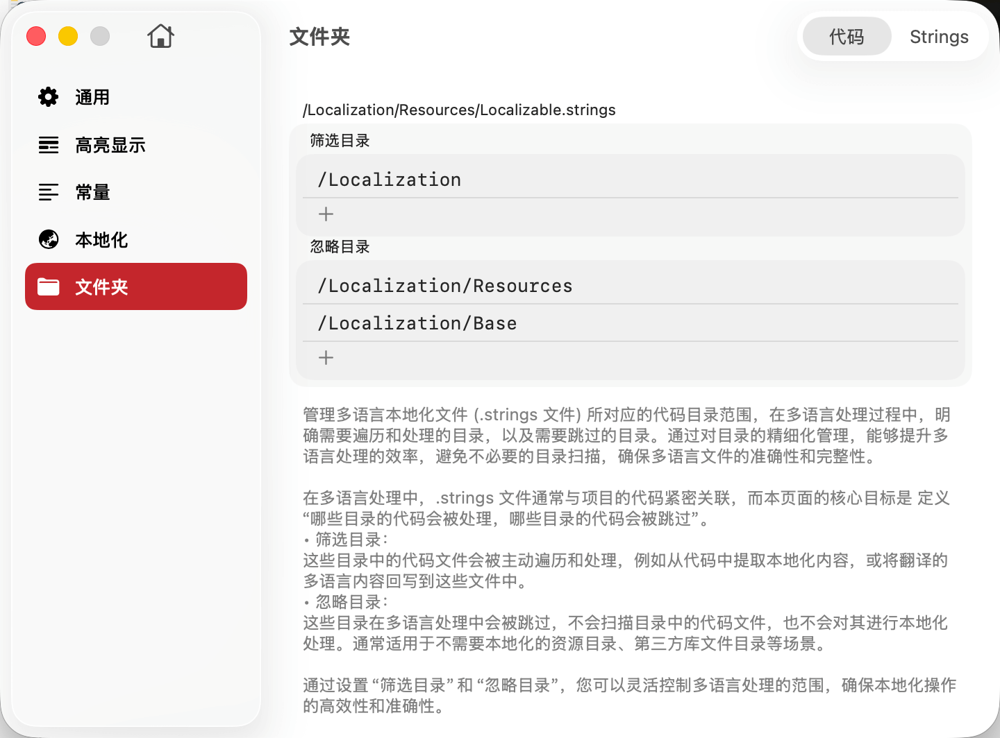
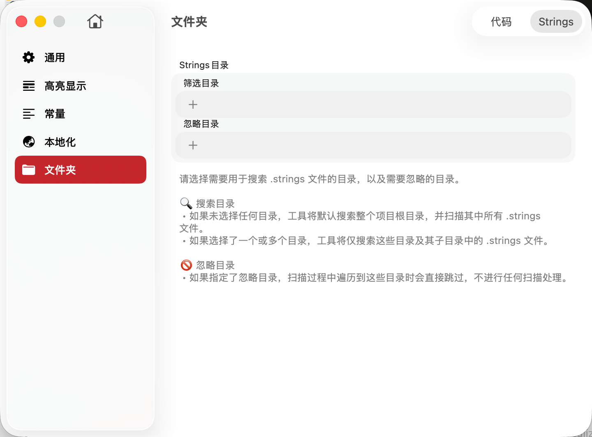

文件夹配置用于定义 TransX 在进行本地化管理时需要扫描和处理的目录范围。通过精确配置代码目录和 .strings 文件目录，可以显著提升工具的执行效率，避免不必要的目录扫描，确保本地化管理的准确性和完整性。

代码目录配置用于管理 .strings 文件对应的源代码范围。在本地化处理过程中，TransX 需要遍历代码文件以实现以下功能：
功能说明：
筛选目录定义了 TransX 应该主动扫描和处理的代码目录范围。
作用：
不建议包含的目录：
忽略目录定义了在扫描过程中应该跳过的目录，这些目录不会被遍历，其中的代码文件不会被分析。
作用：
1. 精确性优于广泛性
✅ 推荐：精确指定需要扫描的目录
/ProjectRoot/App/ViewControllers
/ProjectRoot/App/Views
/ProjectRoot/App/Models
❌ 不推荐：扫描整个项目根目录
/ProjectRoot2. 使用筛选目录优先于忽略目录
✅ 推荐：明确指定要扫描的目录（白名单）
筛选目录：
- /ProjectRoot/Sources/App
- /ProjectRoot/Sources/Features
❌ 不推荐：扫描所有目录然后排除大量目录（黑名单）
筛选目录：/ProjectRoot
忽略目录：Pods, Carthage, Build, Tests, ...（长长的列表）3. 定期审查和更新
./Sources/App: 主应用代码./Sources/Features: 功能模块./Sources/Common: 共享组件./Pods: CocoaPods 依赖./Build: 构建输出./Tests: 测试代码（不需要本地化）3. 性能优化
对于超大型项目（>10,000 文件）：
4. 团队协作
问题1：扫描速度很慢
可能原因：
解决方法：
问题2：找不到某些本地化调用
可能原因：
解决方法：

.strings 文件目录配置用于定义 TransX 应该在哪些位置搜索 .strings 文件。
搜索目录定义了 TransX 应该扫描哪些目录来查找 .strings 文件。
配置规则：
未选择任何目录：
选择一个或多个目录：
忽略目录定义了在搜索 .strings 文件时应该跳过的目录。
应该忽略的目录类型：
构建产物目录：
/ProjectRoot/Build
/ProjectRoot/DerivedData第三方依赖的本地化文件（如果不需要管理）：
/ProjectRoot/Pods
/ProjectRoot/Carthage备份和临时目录：
/ProjectRoot/Backup
/ProjectRoot/Temp1. 组织结构清晰
推荐的项目结构：
``` ProjectRoot/ ├── App/ │ ├── en.lproj/ │ │ └── Localizable.strings │ ├── zh-Hans.lproj/ │ │ └── Localizable.strings │ └── Sources/ ├── Features/ │ ├── UserProfile/ │ │ └── Localizations/ │ │ ├── en.lproj/ │ │ └── zh-Hans.lproj/ │ └── Settings/ │ └── Localizations/ └── Pods/ // 忽略 ```
2. 遵循 Xcode 规范
1. 初始配置建议
新项目开始时：
第一步：不配置任何搜索目录
- 让 TransX 扫描整个项目
- 查看找到了哪些 .strings 文件
- 识别出所有本地化文件的位置
第二步：添加精确的搜索目录
- 根据第一步的结果，配置搜索目录
- 排除不需要的目录
第三步：验证配置
- 检查所有需要的 .strings 文件都被找到
- 确认没有多余的文件被包含2. 文档化
在 README 中说明本地化文件的组织结构。
1. 配置修改后需要重新扫描
修改搜索目录或忽略目录配置后：
2. 路径大小写敏感
在某些文件系统（如 Linux、某些 macOS 配置）上，路径是大小写敏感的：
/ProjectRoot/Localizations ≠ /ProjectRoot/localizations
/ProjectRoot/EN.lproj ≠ /ProjectRoot/en.lproj建议使用小写的标准命名：`en.lproj`、`zh-hans.lproj`
3. 符号链接处理
问题1：找不到某些 .strings 文件
可能原因：
解决方法：
问题2：找到了不需要的 .strings 文件
可能原因：
解决方法：
问题3：扫描后文件列表没有更新
可能原因：
解决方法：
合理配置代码目录和 .strings 文件目录是高效使用 TransX 的基础：
代码目录配置的关键点：
.strings 文件目录配置的关键点：
通用最佳实践：
通过精心配置文件夹，可以显著提升 TransX 的性能和准确性，为项目的本地化管理提供坚实的基础。